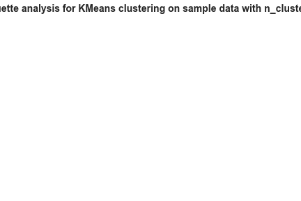
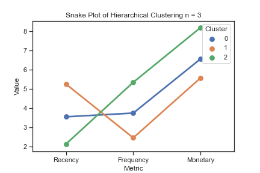

Clustering¶
Plan¶
Definition des Use Case¶
Wie können wir den Kundenwert bestimmen und unsere Marketingaktivitäten daran anpassen?
Wir möchten unsere Kunden segmentieren, weil wir herausfinden möchten, wie wertvoll die Kunden für uns sind, um den Gruppen passende Angebote anzubieten und unser Marketingbudget basierend auf den Kundenwerten zu verteilen. Der Use Case ist deswegen besonders für die Marketing-Abteilung interessant.
Data¶
Die Kundenanalyse basiert auf der Verkaufshistorie des letzten Jahres. Darin sind alle Bestellungen jedes Kunden berücksichtigt. Der Datensatz für diesen Use Case ist von kaggle. Er stammt ursprünglich von einem Onlineshop, der sich im Gegensatz zu Zalando hauptsächlich an Großhändler richtet. Durch das Clustering nach dem RFM-Framework wurde dieser Unterschied jedoch minimiert. Der vollständigen Code befindet sich hier.
import pandas as pd
import numpy as np
---------------------------------------------------------------------------
ModuleNotFoundError Traceback (most recent call last)
/var/folders/kw/s_xlzpvx06b3lqd79926zrb00000gn/T/ipykernel_69752/2162656668.py in <module>
----> 1 import pandas as pd
2 import numpy as np
ModuleNotFoundError: No module named 'pandas'
df = pd.read_csv('../Clustering_Marketing.csv', delimiter=',')
df.head()
| InvoiceNo | StockCode | Description | Quantity | InvoiceDate | UnitPrice | CustomerID | Country | |
|---|---|---|---|---|---|---|---|---|
| 0 | 536365 | 85123A | WHITE HANGING HEART T-LIGHT HOLDER | 6 | 12/1/2010 8:26 | 2.55 | 17850.0 | United Kingdom |
| 1 | 536365 | 71053 | WHITE METAL LANTERN | 6 | 12/1/2010 8:26 | 3.39 | 17850.0 | United Kingdom |
| 2 | 536365 | 84406B | CREAM CUPID HEARTS COAT HANGER | 8 | 12/1/2010 8:26 | 2.75 | 17850.0 | United Kingdom |
| 3 | 536365 | 84029G | KNITTED UNION FLAG HOT WATER BOTTLE | 6 | 12/1/2010 8:26 | 3.39 | 17850.0 | United Kingdom |
| 4 | 536365 | 84029E | RED WOOLLY HOTTIE WHITE HEART. | 6 | 12/1/2010 8:26 | 3.39 | 17850.0 | United Kingdom |
Preprocessing¶
Bevor ich mit dem Clustering begonnen habe, habe ich eine explorative Datenanalyse durchgeführt und den Datensatz bereinigt. Eine Schwierigkeit war hierbei, dass es teilweise Einträge gab, die in der Praxis eine zusätzliche Klärung mit dem Fachbereich benötigt hätten. Dazu gehörten zum Beispiel Zeilen mit einer negativen Bestellmenge oder fehlender Kundennummer. Außerdem gab es teilweise unrealistische Ausreißer wie z.B. negative Preise oder eine sehr hohe Menge an bestellten Produkten. Die Absprache mit dem Fachbereich war in unserem Test allerdings nicht möglich, sodass diese Datensätze von Beginn an ausgeschlossen wurden.
df.describe()
| Quantity | UnitPrice | CustomerID | |
|---|---|---|---|
| count | 541909.000000 | 541909.000000 | 406829.000000 |
| mean | 9.552250 | 4.611114 | 15287.690570 |
| std | 218.081158 | 96.759853 | 1713.600303 |
| min | -80995.000000 | -11062.060000 | 12346.000000 |
| 25% | 1.000000 | 1.250000 | 13953.000000 |
| 50% | 3.000000 | 2.080000 | 15152.000000 |
| 75% | 10.000000 | 4.130000 | 16791.000000 |
| max | 80995.000000 | 38970.000000 | 18287.000000 |
RFM-Analyse¶
Um den Kundenwert zu bestimmen, orientiere ich mich an den Variablen der RFM-Analyse (Recency, Frequency, Monetary). Diese gruppiert Kunden basierend auf drei Kennzahlen und verfolgt das Ziel, Kunden zu identifizieren, die mit einer hohen Wahrscheinlichkeit positiv auf Marketingmaßnahmen reagieren:
Recency bezeichnet die Aktualität eines Kunden, z.B. wann der letzte Einkauf des Kunden war. Je länger der Kauf zurückliegt, desto unwahrscheinlicher ist eine positive Reaktion in einer Marketingkampagne.
Frequency, die Kaufhäufigkeit, gibt an, wie regelmäßig ein Kunde unsere Seite nutzt. Je höher die Kaufhäufigkeit, desto treuer und wertvoller ist der Kunde.
Monetary bezeichnet den Geldwert, der mit dem Kunden in einer bestimmten Zeit generiert wurde. Kunden mit einem größeren Umsatz reagieren wahrscheinlicher auf Marketingmaßnahmen als Kunden mit einem geringeren Umsatz.
Ich verwende für die Bestimmung der drei Variablen für jeden Kunden die Tage seit seinem letzten Kauf (Recency), die absolute Anzahl an Bestellungen (Frequency) und die monetäre Summe aller Bestellungen (Monetary).
Model¶
Bei der Modellierung arbeitete ich sowohl mit dem kMeans Algorithmus als auch mit einem hierarchischen, agglomerativen Clustering.
Bevor ich die Daten an den kMeans Algorithmus übergeben konnte, musste ich die Daten erst standardisieren. Um die optimale Anzahl an Clustern zu bestimmen, wurde beim kMeans Algorithmus der Silhouette Score bestimmt. Der Plot zeigte bereits sehr spitze Zacken, was darauf hindeutet, dass viele Datenpunkte nahe bei einem anderen Cluster liegen. Ich ermittelte dennoch die Cluster für k=2, da dies noch das beste Ergebnis erzielte.

Da ich mit diesem Ergebnis jedoch noch nicht zufrieden war und zwei Cluster nur eine geringe Differenzierung der Kunden ermöglichen, führte ich auch noch ein hierarchisches Clustering durch. Das Dendogramm zeigte, dass die Kunden gut in 3 oder 4 Segmente geteilt werden konnten.
 Nach Bewertung der Plots entschied ich mich für das Hierarchische Clustering mit n=3, da dies einen differenzierten Blick auf die Kunden ermöglichte und sie zu sinnvollen Gruppen zusammenfasste.
Nach Bewertung der Plots entschied ich mich für das Hierarchische Clustering mit n=3, da dies einen differenzierten Blick auf die Kunden ermöglichte und sie zu sinnvollen Gruppen zusammenfasste.
Ergebnisse und Handlungsempfehlungen¶
Die Auswertung der Analyse ergibt 3 Kundensegmente. Diese unterscheiden sich in ihrem Wert, weswegen wir von Bronze, Silber und Gold-Kunden sprechen:
Gold: Das sind unsere liebsten und wichtigsten Kunden. Der letzte Einkauf ist sehr aktuell, sie kaufen regelmäßig und geben das meiste Geld aus. Glücklicherweise, gehören die meisten unserer Kunden zu dieser Gruppe. Es ist wichtig, dass sich Kampagnen in dieser Kundengruppe auf Kundenloyalität fokussieren z.B. durch individuelle Ansprache und exklusive Angebote.
Silber: Diese Kunden sind weniger aktuell, kaufen aber dennoch noch vergleichsweise regelmäßig. Sie geben etwas weniger Geld aus als unsere Gold-Kunden. Es sollte vermieden werden, dass Silber-Kunden ihr Interesse am Shop verlieren und zu Bronze-Kunden werden. Deswegen ist das Ziel, die Kaufhäufigkeit und den monetären Wert dieser Kunden zu steigern und sie somit zu Gold-Kunden zu konvertieren. Das kann durch persönliche Angebote und regelmäßige Aktionen gefördert werden.
Bronze: Diese Kunden kaufen weniger häufig und geben am wenigsten Geld aus. Außerdem liegt ihr letzter Einkauf weiter in der Vergangenheit. Die Ansprache dieser Kunden hat eine geringerre Relevanz, da sie weniger stark zum Unternehmenserfolg beitragen. Gegebenenfalls könnten diese Kunden jedoch mit Retention Angeboten oder über Retargeting erneut angesprochen werden. 